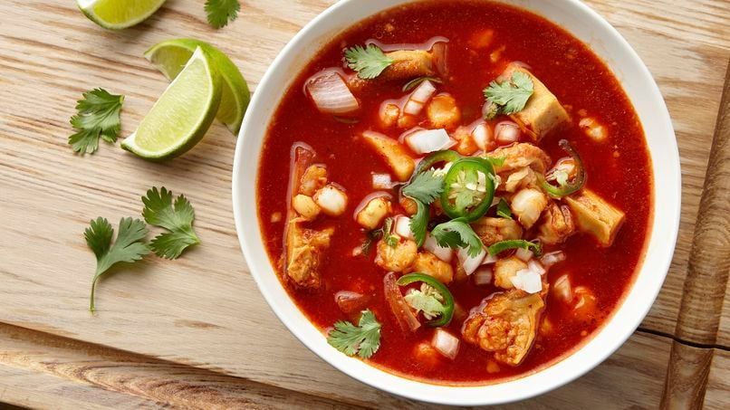

15 chiles guajillos secos, sin tallos y sin semillas
3 libras tripas de panal de ternera
3 cucharadas de sal
Zumo de 1 limón
1 cebolla blanca grande en cuartos
10 dientes de ajo
1 hoja de laurel
1/2 cucharadita de comino molido
1/2 cucharadita de orégano mexicano seco
1 lata (15,5 oz) de maíz blanco, escurrido
1 cucharada de pimienta negra molida
1.Coloca los chiles en una cacerola mediana y agrega suficiente agua para cubrirlos. Después de que hierva el agua déjalos en el fuego por 15 minutos más. Retira y reserva. (No los escurras).
2.Enjuaga los callos con agua fría, retira el exceso de grasa y córtalos en tiras de 2x1/2 pulgadas. (Las tijeras de cocina funcionan muy bien para cortar los callos). Llena un recipiente grande con agua fría. Agrega en él 1 cucharada de sal y el jugo de 1 limón y agrega los callos. Déjalos remojar durante 10 minutos para eliminar las impurezas; después escurre y enjuaga.
3.En una olla grande, hierve 1 1/2 galones de agua a fuego alto. Añade los callos, la cebolla, 4 dientes de ajo, la hoja de laurel y 1 cucharada de sal. Deja hervir; reduce el fuego y cocina a fuego lento durante 2 horas o hasta que los callos estén tiernos.
4.Por otro lado, en una procesadora de alimentos, coloca los chiles remojados con 1 taza del agua del remojo de los chiles, los 6 dientes de ajo restantes, el comino y el orégano. Procese hasta que la mezcla esté muy tersa. Pasa la por un colador de malla fina.
5.Agrega el maíz molido, la salsa de chile guajillo colada, la cucharada restante de sal y 1 cucharada de pimienta a la mezcla de callos; lleva a ebullición a fuego medio alto. Reduce el fuego; cocina a fuego lento sin tapar de 15 a 20 minutos para que los sabores se mezclen.
6.Prueba el menudo; si es necesario, sazona al gusto con sal, pimienta y jugo de limón fresco. Sirve con rodajas de limón, cilantro y unas rodajas de jalapeño.